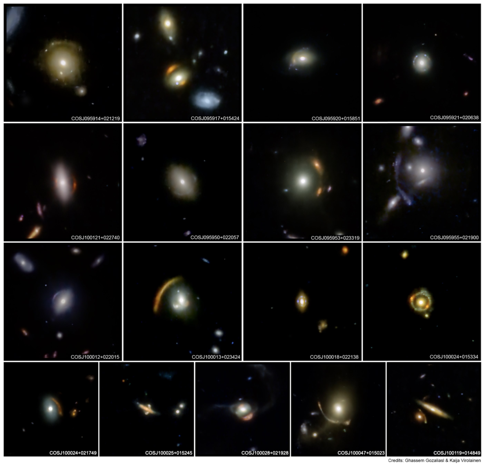
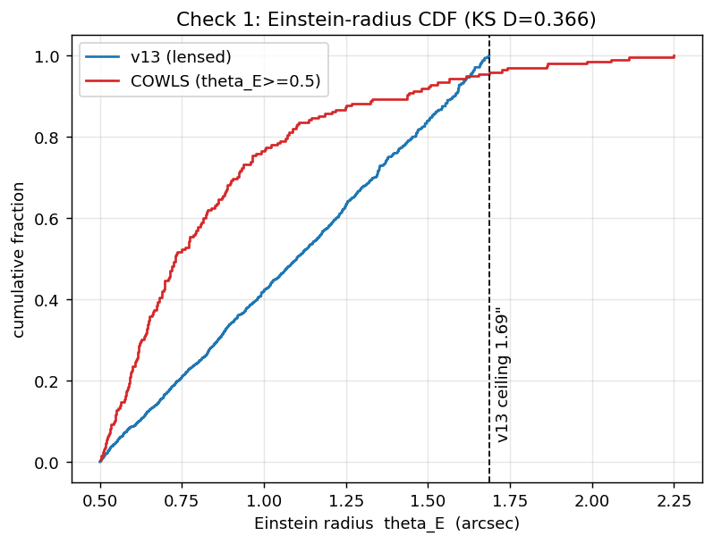
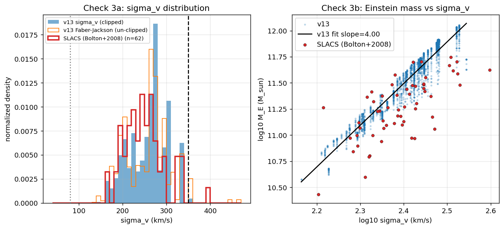
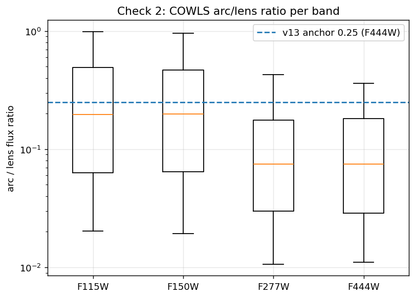

Three catalog-vs-catalog checks — zero new images generated.

v13's sources (JADES/VELA) and the real lenses (COWLS) are different surveys with different selection. So we compare distributions & scaling relations — physics that should hold regardless of which survey the galaxies came from.
1 · Einstein radius θE
2 · velocity dispersion σv & Einstein mass
3 · arc / lens flux ratio
Samples: 2,500 v13 lensed · 385 COWLS · 62 SLACS.
θE is the one-number measure of lens strength. Compared on the overlapping range θE ≥ 0.5″ (v13 simulates [0.5, 2.5]″ by design).

caveat — keep it honest
COWLS is visually graded & JWST-selected. The 4.6% is “of COWLS lenses with θE ≥ 0.5″” — a lower bound, not an absolute sky rate. Problem B's root cause → next slide.
σv sets lens strength (θE ∝ σv²) and is the cleanest survey-independent cross-check.

the bulk is right
ME–σv log-log slope = 4.00 (SIE physics predicts 4). Median σv 265 vs SLACS 245 km/s; median log ME 11.6 (SLACS 10.8–11.7). v13 gets the central scaling right.
the diagnosis
v13 clips σv at 350 km/s, yet the Faber–Jackson values it already computes reach 461 km/s. That clip is the mechanical cause of the θE ceiling in Check 1.
the fix
COWLS's largest θE (2.25″) needs σv ≈ 350·√(2.25/1.69) ≈ 405 km/s — inside FJ's 461. Raise the clip 350 → ~410–460 and the missing tail returns, from numbers v13 currently discards.
v13 does not predict arc brightness — it hard-codes arc flux = 0.25 × the lens, set at F444W.

headline
At F444W v13 arcs are ~3.3× too bright (0.25 vs 0.075). The blue/red trend is physical: red elliptical lenses, blue star-forming arcs.
conjecture unverified
Anchoring at the reddest band may also invert the band trend vs reality. Confirming needs aperture photometry on the existing cubes (follow-up 2b — not yet run).
the fix
Move the flux anchor to a blue band and set per-band ratios from this COWLS table (~0.20 blue, ~0.075 red).
Three concrete changes. The first two are catalog-grounded today; the third is flagged as investigation.
So these are targeted tweaks, not a rebuild.
All numbers reproduce from catalog_checks.py — numpy core, runs in the bare login env; scipy only for KS p-values.
So every claim can be defended at the meeting.
measured — solid
conjecture — flagged
caveats — locked
Bottom line: v13's central physics is sound — the gaps are a missing high-σv tail and a mis-anchored arc color, both fixable with values it already computes.